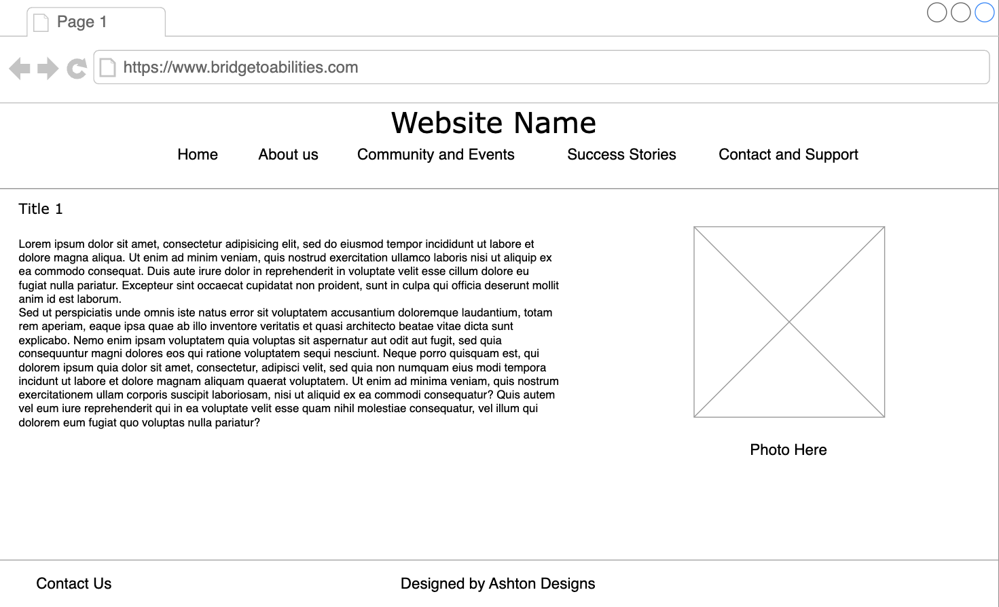
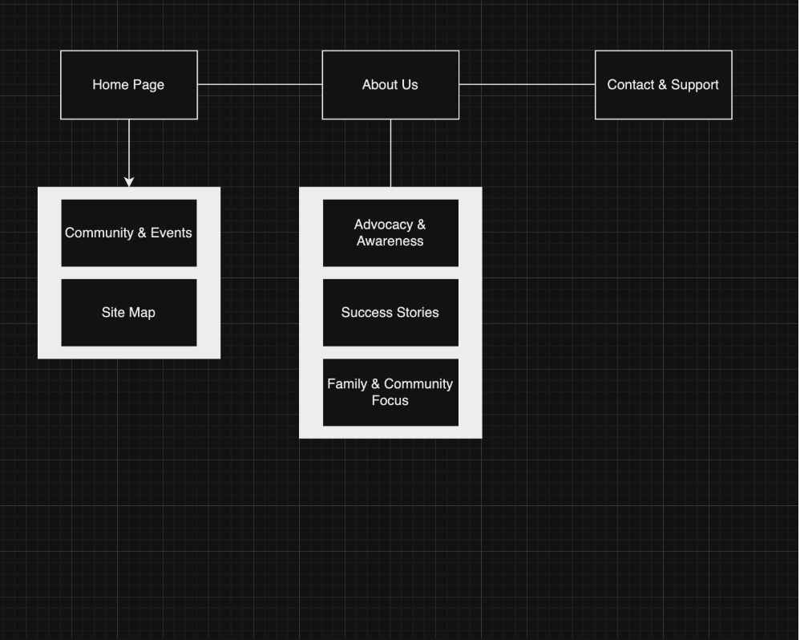

Project Name:
Bridge to Abilities
Project Overview:
Purpose: This website is designed to support families, caregivers, and individuals with special needs by providing resources, event information, and a community platform. The goal is to create a welcoming online space where families can find helpful articles, support groups, and upcoming events tailored to the special needs community.
Intended Users: Parents and guardians of children with special needs, individuals with special needs looking for community support, educators and therapists who work with special needs individuals, and support organizations and advocacy groups.
Content Overview: The website will provide insight into various community events, support services, advocacy efforts, and success stories. It will highlight the ways in which our organization supports not only individuals with special needs but also their families and friends.
Client Information:
- Name: Courtney Kenley
- Organization: Joy Special Needs Ministry
- Email: [private]
- Phone: [private]
WireFrame:
Site Map:
Page Design:
- Home Page: Searchable and filterable directory of support groups and resources.
- Community and Events: Details about upcoming events for individuals with special needs and their families.
- About Us: Overview of our organization and mission.
- Advocacy and Awareness: Gallery and campaigns to raise awareness.
- Success Stories: Inspirational stories of community impact.
- Family and Community Focus: Highlights community inclusion efforts.
- Contact and Support: Form for visitors to reach out with questions.
Dynamic and Functionality on the Website:
- Home Page (index.html): Interactive Resource Finder with filtering, inspired by Autism Speaks.
- Community and Events Page (events.html): Interactive event calendar similar to Eventbrite.
- Success Stories Page (stories.html): Story submission form with dynamic content, like The Mighty.
- About Us Page (about.html): Interactive gallery using lightbox/carousel effect.
- Support Page (support.html): Interactive FAQ with collapsible sections.
- Accessibility Features: Text resizing, dark mode, and text-to-speech across all pages.